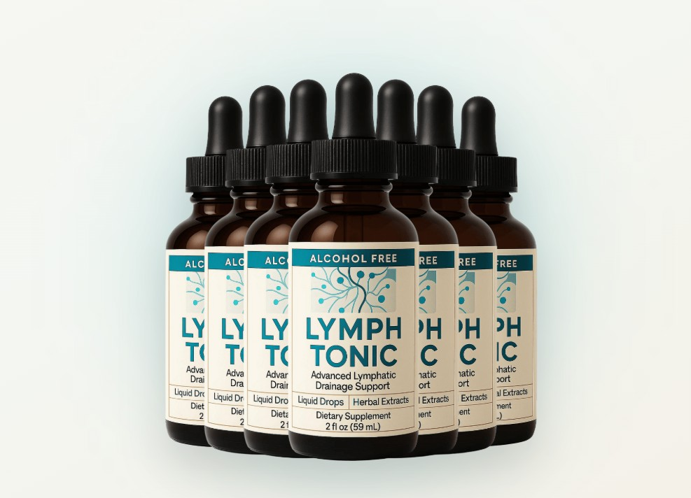

Health Reviews Labs investigated the Nattokinase protocol behind Lymph Tonic — and why this enzyme has been researched for circulatory support for decades while remaining absent from most supplements. Here's the honest breakdown.

Nattokinase + Horse Chestnut + 10 Botanicals · 60-Day Guarantee
→ Click Here for Official SiteLymph Tonic is an alcohol-free liquid herbal supplement built around what its marketing calls the "forbidden enzyme protocol" — a combination of Nattokinase, a fibrinolytic enzyme derived from natto (fermented Japanese soybeans), with eleven botanical compounds targeting the lymphatic and circulatory system through four distinct biological pathways. It comes in a 2-fluid-ounce dropper bottle, with a recommended serving of two full droppers daily, taken directly or mixed into water. The liquid format is a deliberate formulation choice: sublingual absorption bypasses the gastric dissolution step that delays capsule-based supplements from reaching systemic circulation.
Unlike the cardiovascular system, the lymphatic system has no dedicated pump. It depends entirely on muscle contractions, movement, and hydration to keep fluid moving through its vessels. Sedentary work, chronic inflammation, illness recovery, poor diet, and aging all slow lymphatic flow — causing fluid to accumulate in tissues. The result is the symptoms many people live with and accept as normal: swollen ankles by end of day, persistent morning puffiness in the face, heavy legs, and a generalized feeling of sluggishness that rest doesn't fix.
Nattokinase is called "forbidden" in supplement marketing not because it's prohibited — it isn't — but because it's rarely included in mainstream formulas despite decades of research on its circulatory properties. It's a fibrinolytic enzyme: it breaks down fibrin, a protein involved in clot formation and circulatory sluggishness. By improving blood flow dynamics and reducing the viscosity of blood moving through microcirculation, Nattokinase may reduce the burden on the lymphatic system, which handles overflow fluid from vascular beds. When blood moves more freely, less fluid leaks into surrounding tissue — and the lymphatic system has less accumulated fluid to drain.
This is the mechanism that distinguishes Lymph Tonic from standard herbal lymphatic formulas that rely only on botanical diuretics and detox herbs. The enzyme pathway is fundamentally different from the botanical pathway — and combining them addresses the problem from two angles simultaneously.
Fibrinolytic enzyme derived from natto with research on circulatory dynamics and fibrin breakdown. The "forbidden enzyme" central to the formula's positioning.
The most clinically credible ingredient in the formula. Aescin has been reviewed by the Cochrane Collaboration — one of the most rigorous independent research bodies in medicine — in connection with leg edema and chronic venous insufficiency. Multiple randomized controlled trials support its effect on fluid balance and leg heaviness.
Deeply rooted in Ayurvedic medicine, Boswellia's AKBA compounds provide anti-inflammatory support that addresses the inflammation which can mechanically impede lymphatic flow through vessel walls.
Traditional lymphatic botanicals with centuries of documented empirical use, targeting lymph node function, fluid movement, and immune support through the lymphatic system.
Anti-inflammatory and antioxidant support targeting systemic inflammation that contributes to lymphatic congestion.
Included specifically to increase absorption of the botanical compounds — a formulation detail most herbal supplements omit. Piperine from black pepper inhibits rapid metabolic breakdown of botanical compounds; Phosphatidylcholine creates lipid-compatible complexes for improved intestinal absorption.
Lymph Tonic's case is built on a genuine mechanistic differentiator: the combination of Nattokinase's fibrinolytic enzyme pathway with Horse Chestnut's Cochrane-reviewed aescin compound addresses lymphatic congestion from two distinct biological angles that purely botanical formulas miss. The fully disclosed 12-ingredient formula, bioavailability enhancers, alcohol-free liquid format, and 60-day guarantee distinguish it from generic lymphatic supplements. The contraindication list is significant and worth reading carefully — this isn't a casual supplement for everyone, but for healthy adults dealing with fluid retention and circulatory sluggishness, the mechanism is more credible than most of what exists in this category.
The first noticeable signals as the Nattokinase and Horse Chestnut compounds begin improving microcirculation and fluid balance.
As circulatory support compounds and botanical anti-inflammatory ingredients accumulate their effect on vascular wall integrity.
The formula is designed for 4-8 week focused protocols. Energy improvements and reduced chronic sluggishness are typically reported alongside the circulatory changes in this window.
Pricing reflects publicly available information at time of publication — confirm current pricing on the official site before purchase.
Nattokinase + Horse Chestnut · 60-Day Money-Back Guarantee
→ Click Here for Official Site